Week 9 — Course/Section endpoints
Every screenshot below is from an actual run against the live server — not a description of what should happen. Validated twice, against both databases the app supports: the default in-memory H2 profile, and the real Postgres dev profile. Under each screenshot, expand Recreate this step for the exact commands to reproduce it yourself.
| Step | Expected | H2 | Postgres | |
|---|---|---|---|---|
| 01 | Schema created on startup | courses, sections, user_courses tables exist | PASS | PASS |
| 02–03 | Insert Course + 2 Sections | Rows persist, FK to course_id set | PASS | PASS |
| 04–05 | Select back the rows | Data matches what was inserted | PASS | PASS |
| 06 | Schema detail check | H2: join table empty · Postgres: real column types | PASS | PASS |
| 07 | Register a user | 201 Created | PASS | PASS |
| 08 | Login | 200, JWT returned | PASS | PASS |
| 09 | GET /api/courses, no auth | 403 (not 401 — confirmed app behavior) | PASS | PASS |
| 10 | GET /api/courses, authenticated | 200, only id/title/description | PASS | PASS |
| 11 | GET /api/courses/1/sections | 200, only id/content/courseId | PASS | PASS |
| 12 | GET /api/courses/999/sections | 404, {"error":"Course not found"} | PASS | PASS |
No Docker, no environment variables. This is the fastest way to validate the endpoint logic itself.
cd AhaSpace mvn spring-boot:run
SERVER IS LIVE on http://localhost:8080! in the console output.application.yaml profile points at jdbc:h2:mem:learning_db, an in-memory database Hibernate creates fresh on every restart.Connected to the running app's H2 console. The left tree shows COURSES, SECTIONS, and USER_COURSES alongside the existing CHAT_MESSAGES/CHAT_SESSIONS/USERS tables — Hibernate's ddl-auto=update generated all three new tables from the entity annotations with no manual migration.
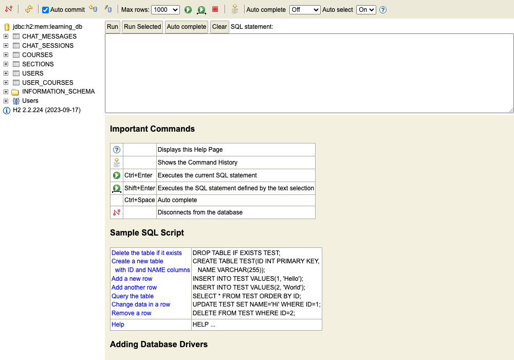
http://localhost:8080/h2-console in a browser.org.h2.Driver and JDBC URL as jdbc:h2:mem:learning_db — both are pre-filled.sa, leave Password blank.One row inserted into COURSES directly via SQL (no create-endpoint exists this week by design — read-only APIs only).
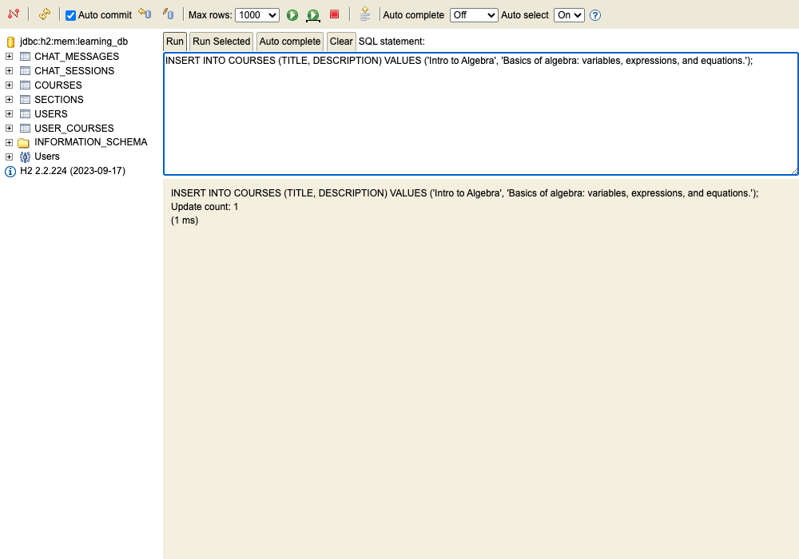
In the SQL box (top of the console, after connecting), run:
INSERT INTO courses (title, description) VALUES
('Intro to Algebra', 'Basics of algebra: variables, expressions, and equations.');
Click Run.
Both rows reference course_id = 1 — this is the Section.course owning side of the relationship at work: each section stores the FK back to its course.
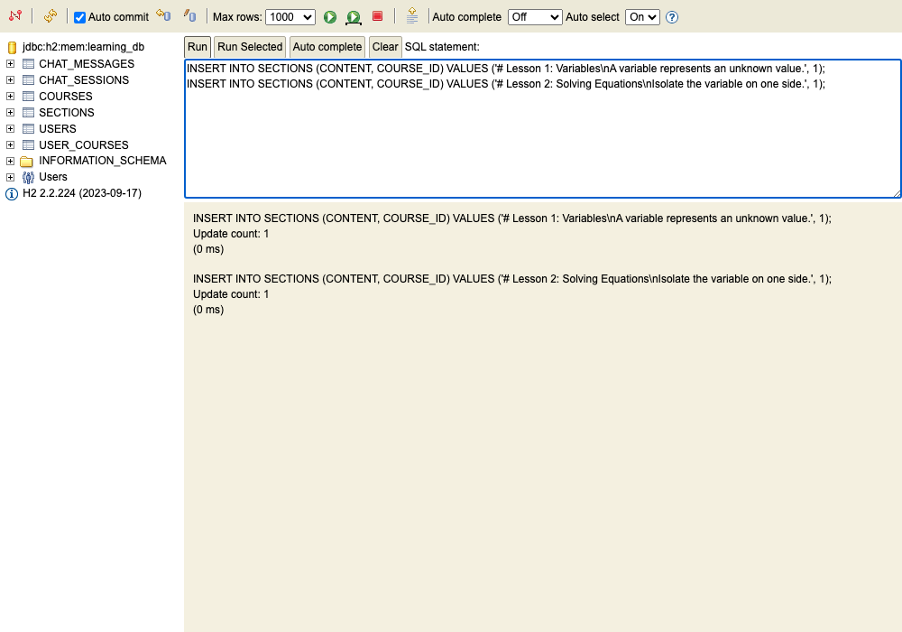
Replace the SQL box contents with (both statements, then Run once):
INSERT INTO sections (content, course_id) VALUES
('# Lesson 1: Variables', 1);
INSERT INTO sections (content, course_id) VALUES
('# Lesson 2: Solving Equations', 1);
The 1 must match whatever id your Course from step 02 actually got — check the tree or re-run SELECT * FROM courses; if unsure.
SELECT * FROM COURSES; — confirms the row saved with the exact title/description text.
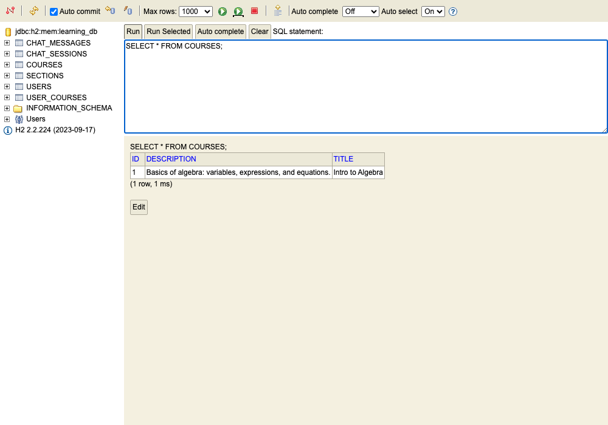
SELECT * FROM courses;
Click Run. You should see the row from step 02.
SELECT * FROM SECTIONS; — both rows show course_id = 1, confirming the foreign key column is exactly what @JoinColumn(name = "course_id") specified in the plan.
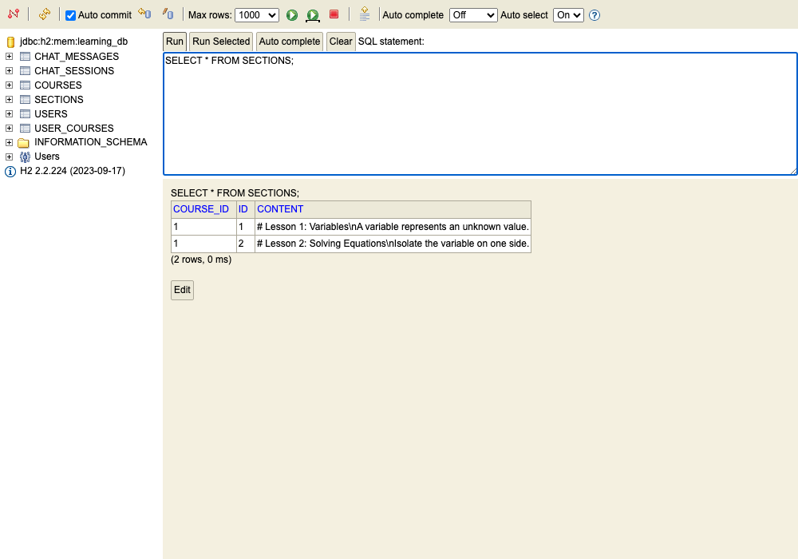
SELECT * FROM sections;
Click Run. Confirm both rows show the same course_id.
SELECT * FROM USER_COURSES; — table exists with the two FK columns from the decisions.md-approved shape, currently empty since no enrollment flow exists yet (out of scope this week).
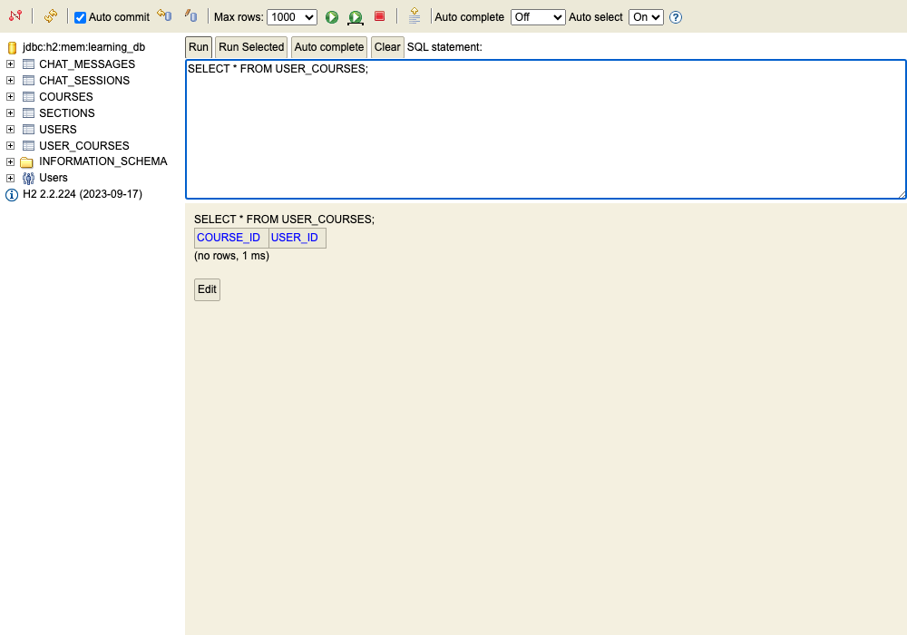
SELECT * FROM user_courses;
Click Run. Expect 0 rows — this table only fills once an enrollment feature writes to user.getEnrolledCourses(), which doesn't exist yet.
POST /api/auth/register — needed to obtain a JWT for the protected endpoints below.
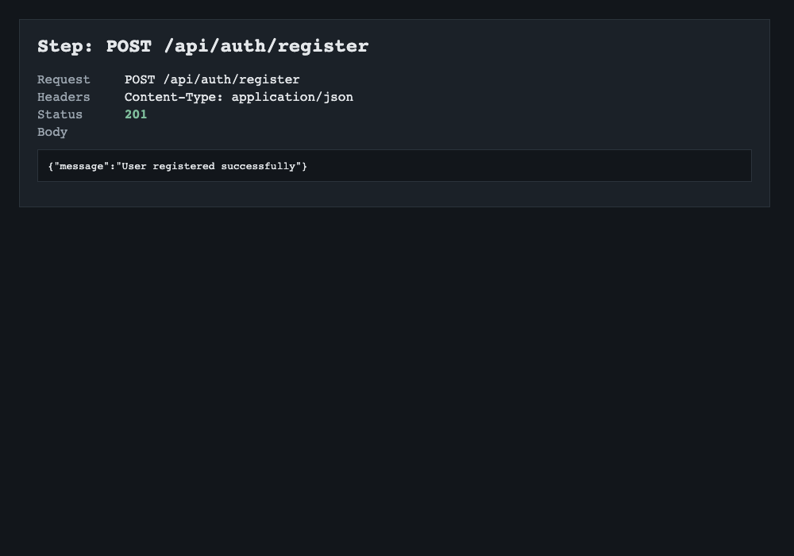
In a terminal, with the server still running:
curl -s -X POST localhost:8080/api/auth/register \
-H "Content-Type: application/json" \
-d '{"username":"week9_tester","password":"testpass123"}'
Expect {"message":"User registered successfully"}. Pick a username you haven't used before — registering the same one twice fails.
POST /api/auth/login — the returned token is used as the Authorization: Bearer header for every call below.
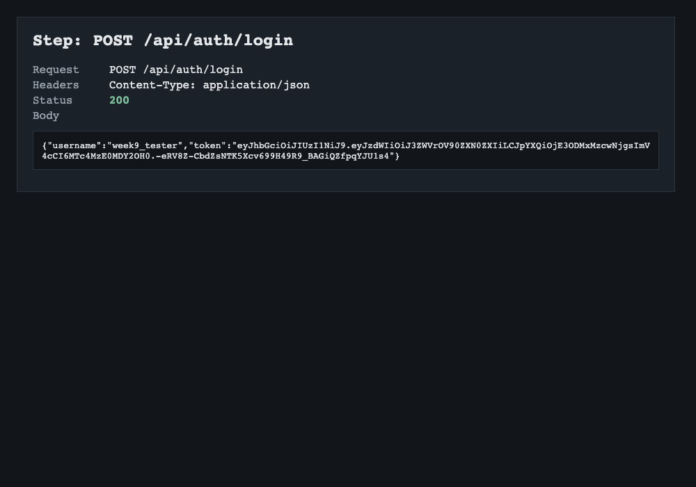
TOKEN=$(curl -s -X POST localhost:8080/api/auth/login \
-H "Content-Type: application/json" \
-d '{"username":"week9_tester","password":"testpass123"}' \
| python3 -c "import sys,json;print(json.load(sys.stdin)['token'])")
echo $TOKEN
Keep this terminal/variable around — steps 10–12 below reuse $TOKEN.
Confirms the endpoint is actually behind auth. Returns 403, not 401 — this app's Spring Security config has no custom AuthenticationEntryPoint, so its default unauthenticated response is 403. Flagged during Phase 6 verification as a deliberate, checked divergence from the plan doc's wording, not a bug.
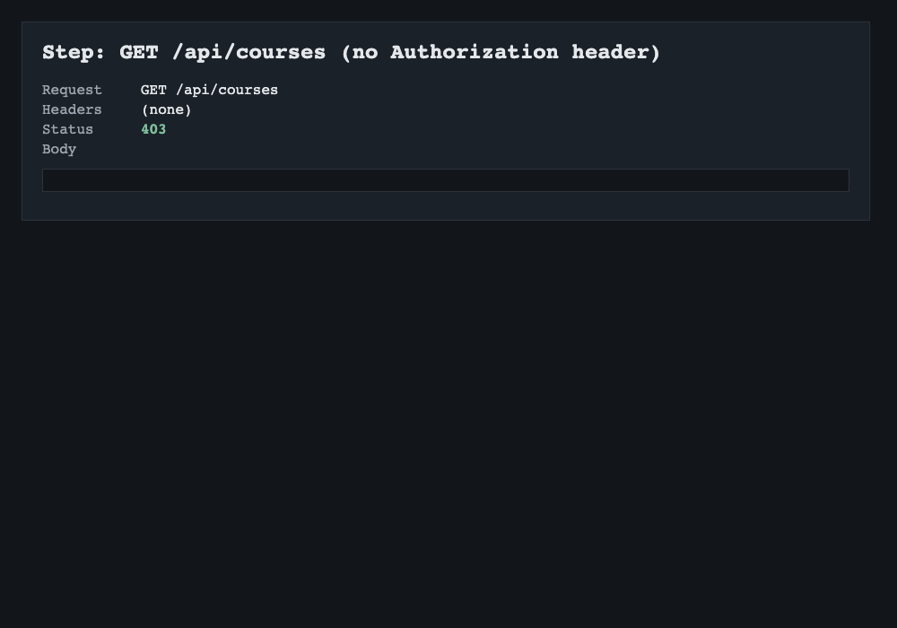
curl -s -o /dev/null -w "%{http_code}\n" localhost:8080/api/coursesNo Authorization header — expect 403.
Response body has exactly id, title, description — no sections or enrolledUsers field leaking through, confirming CourseDto is doing its job and the LAZY collections are never touched on this path.
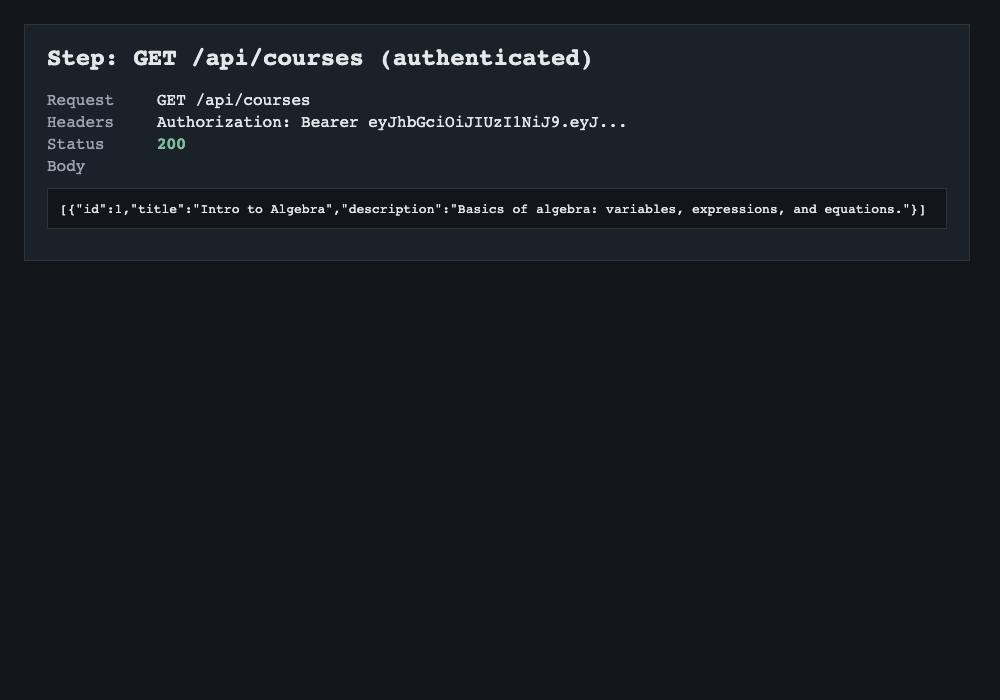
curl -s localhost:8080/api/courses \ -H "Authorization: Bearer $TOKEN" | python3 -m json.tool
Both sections returned with exactly id, content, courseId — courseId is the path parameter passed straight through in the service, not read off the lazy Section.course association.
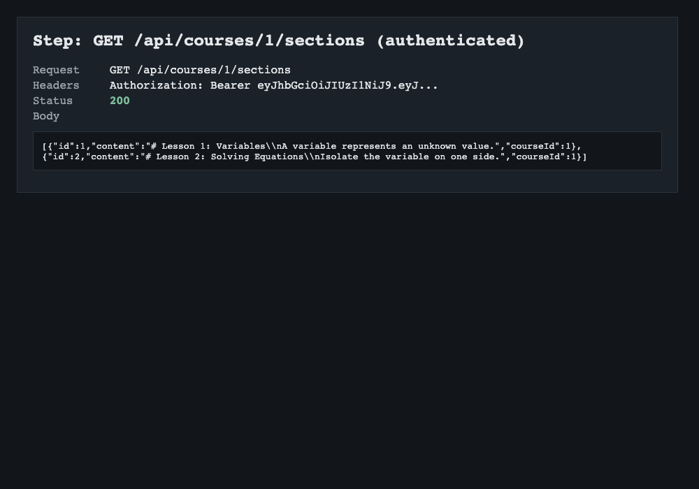
curl -s localhost:8080/api/courses/1/sections \ -H "Authorization: Bearer $TOKEN" | python3 -m json.tool
Use whatever course id you actually created in step 02 if it isn't 1.
404 with {"error":"Course not found"} — the ResponseStatusException thrown in CourseService propagates through the existing GlobalExceptionHandler exactly as planned, no new exception-handling code needed.
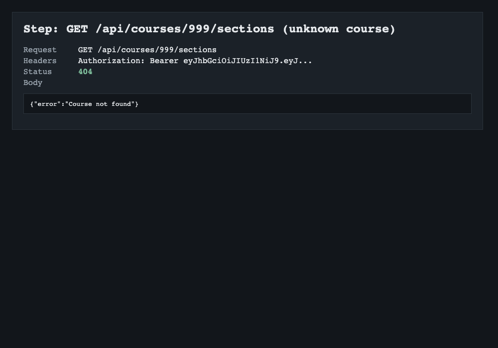
curl -s localhost:8080/api/courses/999/sections \ -H "Authorization: Bearer $TOKEN" | python3 -m json.tool
Use any id you're sure doesn't exist.
Ctrl+C in the terminal running mvn spring-boot:run (or the Stop button if you launched it from an IDE).jdbc:h2:mem:learning_db, an in-memory database that only exists inside this app's own JVM process. The instant the JVM exits, the database (schema, rows, everything from steps 01–06) is gone with it. There's no separate database process to stop, no container, nothing left holding a connection open.unset TOKEN
Ctrl+C doesn't actually kill the process and a later run fails with "Port 8080 was already in use," see the Common errors and suggested solutions section below for how to find and stop the leftover process.Same 12 checks, run again against the actual Postgres container used for the dev profile — this is what confirms the schema and queries behave identically outside of H2, including real column types.
AhaSpace/docker-compose.yml — from the repo root):
docker compose up -dSafe to run no matter what state the container is already in — missing, stopped, or already running — it won't error or create a duplicate. Do not use
docker run --name ahaspace-postgres ... here: that command always tries to create a brand-new container, so it fails with a name conflict if one already exists, and fails again with a port conflict if you rename it to dodge that — docker compose up -d exists specifically to avoid both.docker compose up -d):
docker exec ahaspace-postgres pg_isready -U ahaspace -d enlightenment
dev profile, exporting the three variables it needs in the same command — this is the step that broke earlier when the variables weren't actually reaching the mvn process:
cd AhaSpace DB_URL=jdbc:postgresql://localhost:5432/enlightenment \ DB_USERNAME=ahaspace \ DB_PASSWORD=ahaspace \ mvn spring-boot:run -Dspring-boot.run.profiles=dev
SERVER IS LIVE on http://localhost:8080!. In the startup log you should also see Hibernate's real DDL, e.g. Hibernate: create table courses (id bigserial not null, ...) — if you instead see a driver error mentioning ${DB_URL} literally, the export didn't take effect; re-run as one single command exactly as above rather than exporting the variables in a separate line first.Same H2 console UI, but pointed at the real database this time — the H2 console is a generic web SQL client, not limited to H2 itself. The tree lists the same tables, now genuinely inside Postgres.
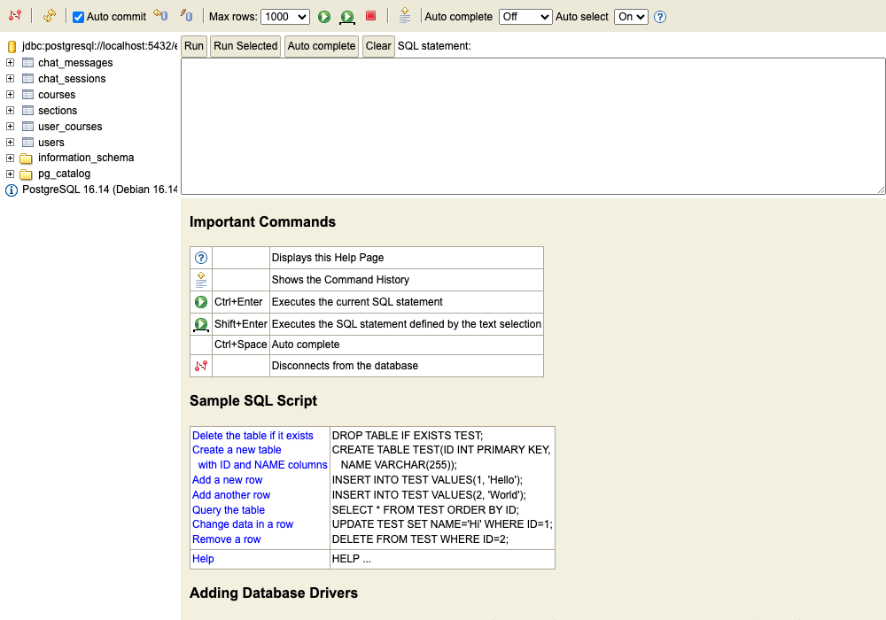
http://localhost:8080/h2-console.org.postgresql.Driver.jdbc:postgresql://localhost:5432/enlightenment.ahaspace, Password to ahaspace.Same insert as the H2 run, now a real row in the Postgres enlightenment database.
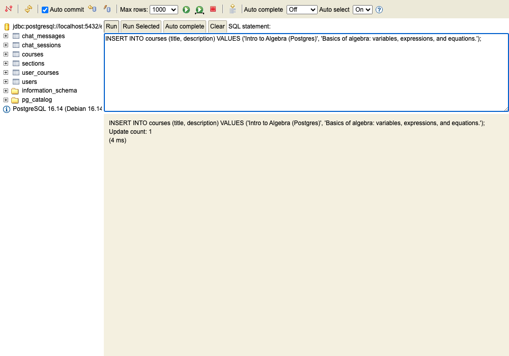
INSERT INTO courses (title, description) VALUES
('Intro to Algebra (Postgres)', 'Basics of algebra: variables, expressions, and equations.');Same FK relationship, now enforced by a real Postgres foreign key constraint (visible in the startup log as alter table if exists sections add constraint ... foreign key (course_id) references courses).
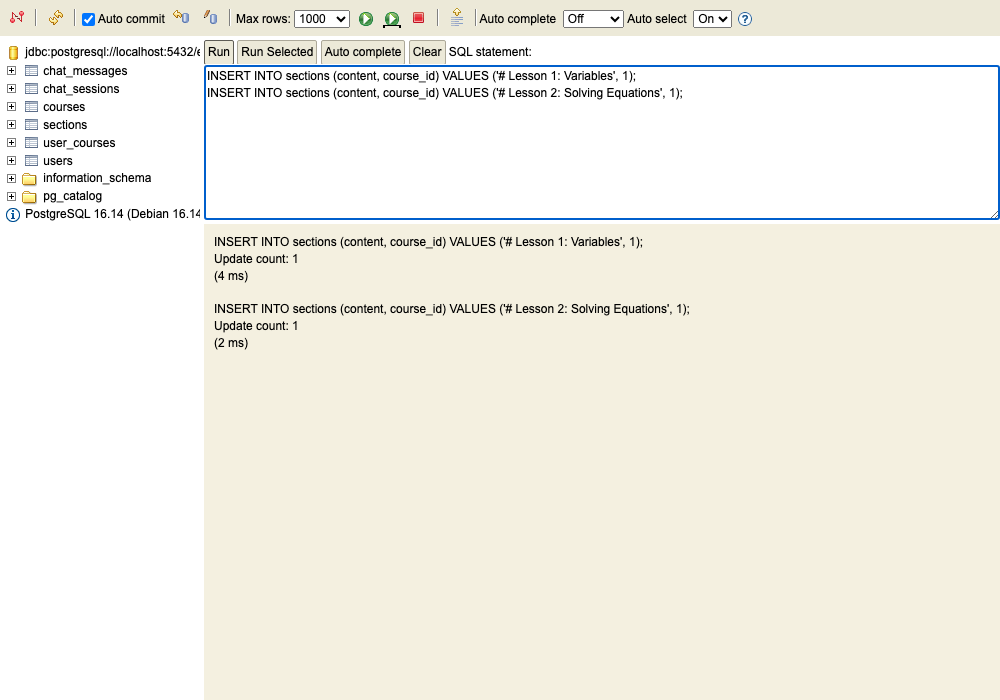
INSERT INTO sections (content, course_id) VALUES ('# Lesson 1: Variables', 1);
INSERT INTO sections (content, course_id) VALUES ('# Lesson 2: Solving Equations', 1);
Match the id to whatever your course from step 02 actually got.
Confirms the row round-tripped correctly through a real database engine, not just H2's in-memory approximation.
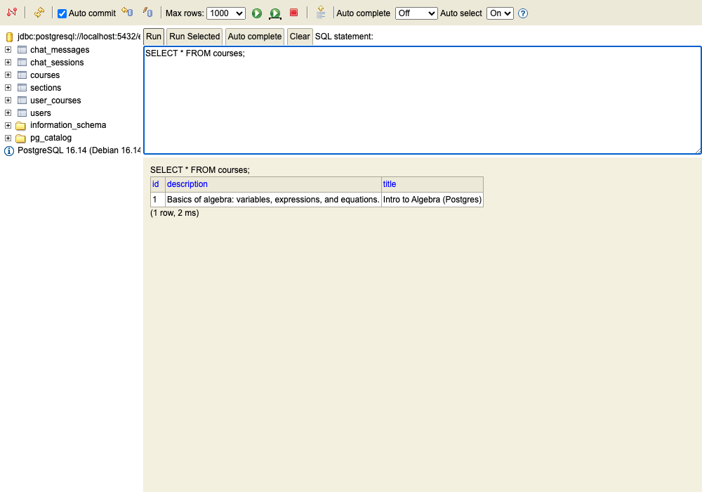
SELECT * FROM courses;
Same check as H2 step 05, against real Postgres rows.
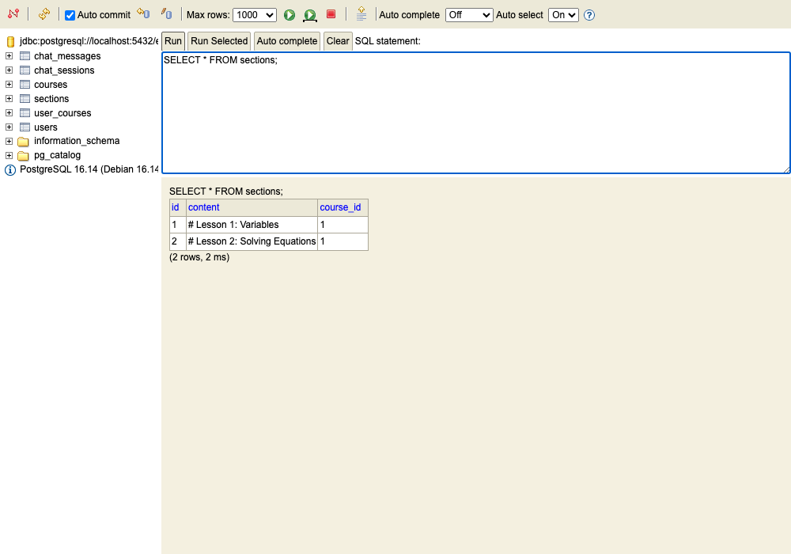
SELECT * FROM sections;
This is the check H2 can't give you: querying Postgres's own catalog proves @Column(columnDefinition = "TEXT") actually produced a genuine text column (not a truncated varchar), and that course_id is a real bigint foreign key — exactly the decisions.md-approved shape, confirmed against the production-target database engine.
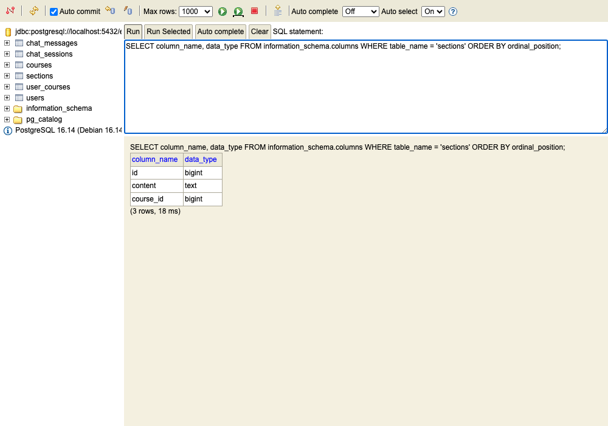
SELECT column_name, data_type FROM information_schema.columns WHERE table_name = 'sections' ORDER BY ordinal_position;
Identical API call as H2 step 07 — the point of this whole second pass is that the application code doesn't know or care which database is behind it.
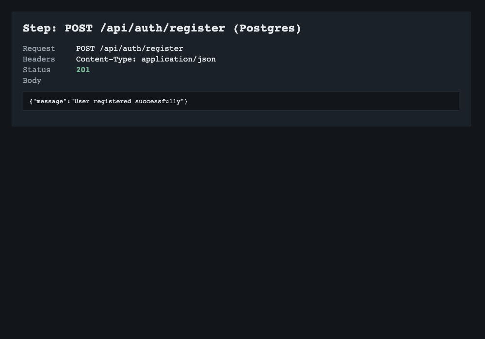
curl -s -X POST localhost:8080/api/auth/register \
-H "Content-Type: application/json" \
-d '{"username":"week9_pg_tester","password":"testpass123"}'Same flow as before — JWT generation doesn't touch the database differently based on which engine is behind it.
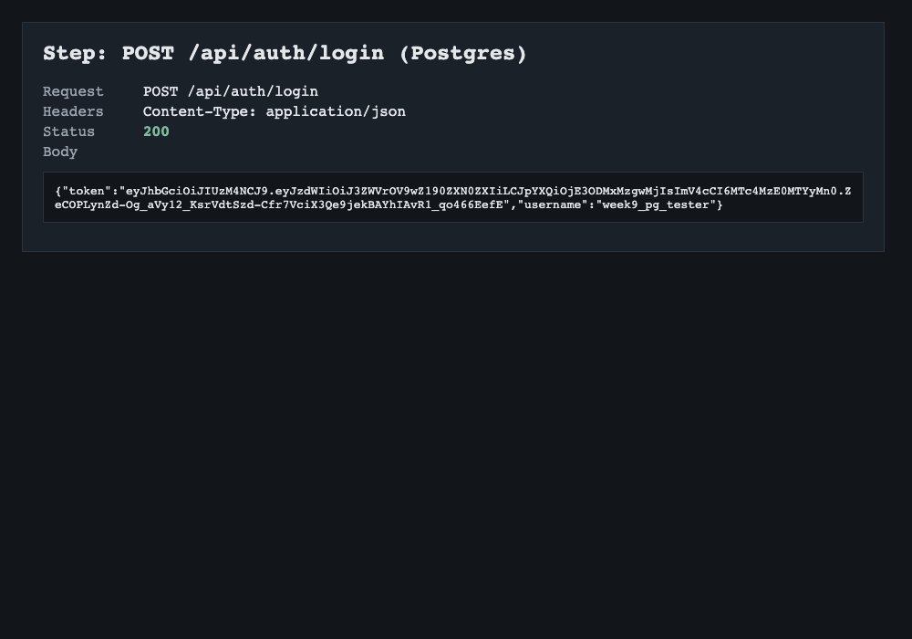
TOKEN=$(curl -s -X POST localhost:8080/api/auth/login \
-H "Content-Type: application/json" \
-d '{"username":"week9_pg_tester","password":"testpass123"}' \
| python3 -c "import sys,json;print(json.load(sys.stdin)['token'])")
echo $TOKENSame 403, confirmed independent of which database sits behind the security filter chain.
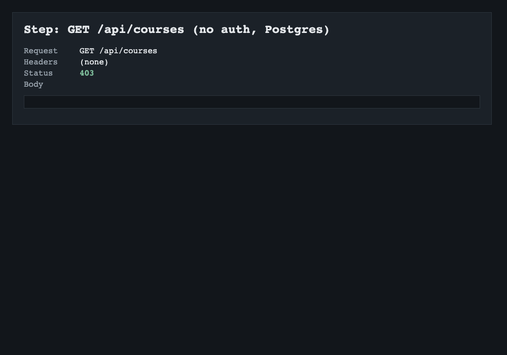
curl -s -o /dev/null -w "%{http_code}\n" localhost:8080/api/coursesSame clean id/title/description shape, now backed by a real Postgres query instead of H2's.
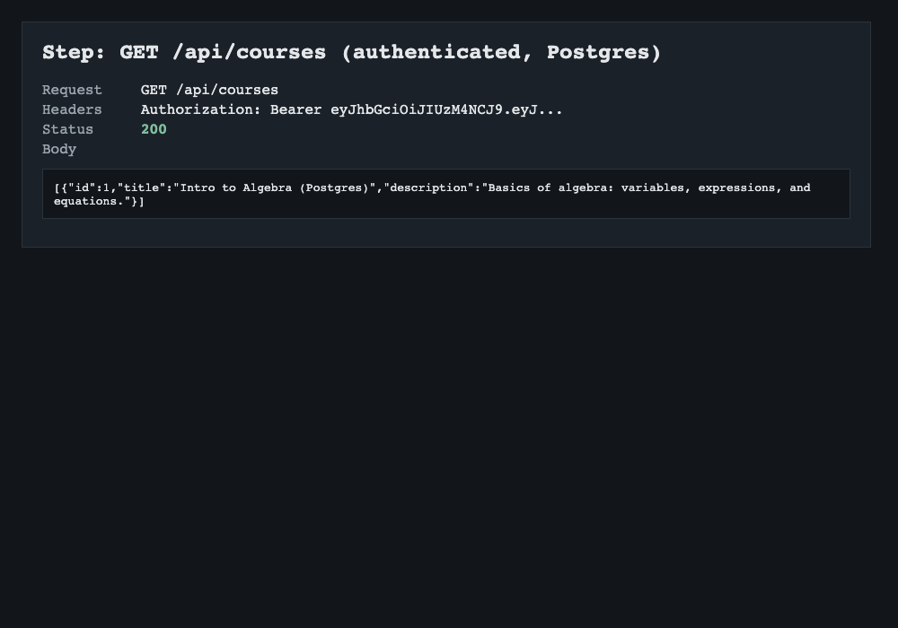
curl -s localhost:8080/api/courses \ -H "Authorization: Bearer $TOKEN" | python3 -m json.tool
Confirms the LAZY-fetch-plus-DTO-inside-transaction pattern works the same way against a real transactional database, not just H2's simplified transaction handling.
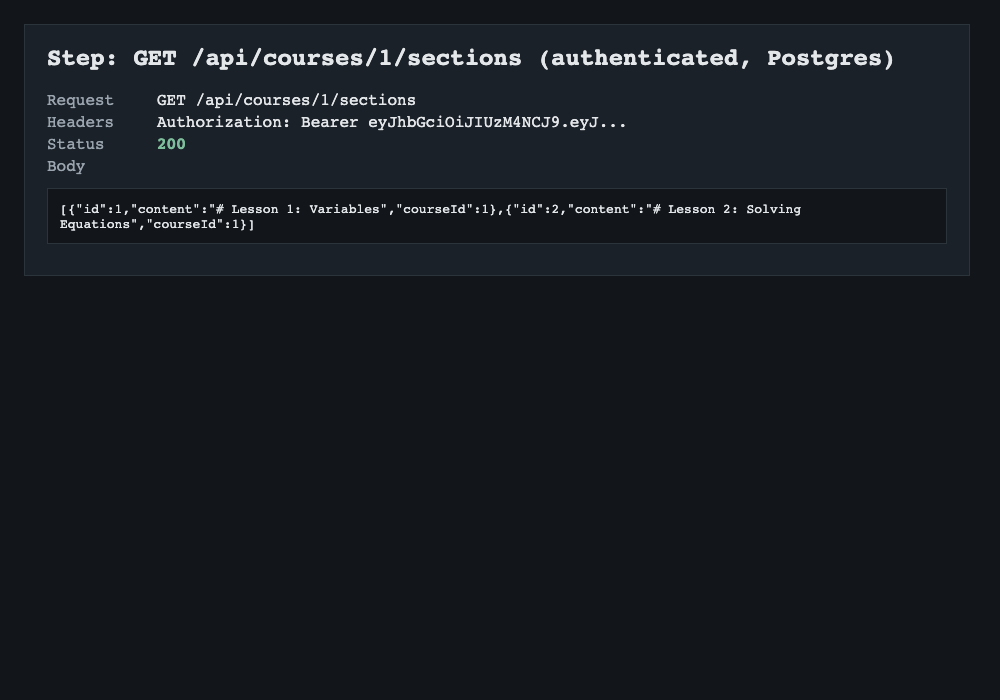
curl -s localhost:8080/api/courses/1/sections \ -H "Authorization: Bearer $TOKEN" | python3 -m json.tool
Same 404 shape — the ResponseStatusException → GlobalExceptionHandler path doesn't depend on which database threw the "not found" upstream.
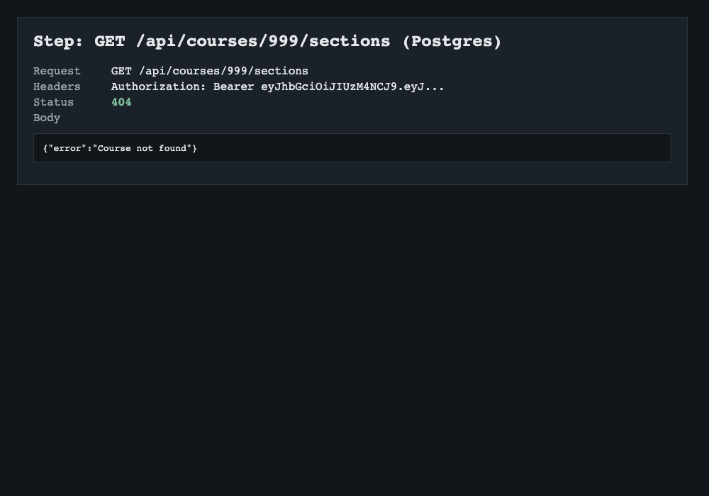
curl -s localhost:8080/api/courses/999/sections \ -H "Authorization: Bearer $TOKEN" | python3 -m json.tool
Ctrl+C in the terminal running mvn spring-boot:run (or the Stop button in an IDE). This is the step that actually matters here — it lets HikariCP (the connection pool the app uses) close every open connection to Postgres cleanly. Killing the terminal window itself instead (rather than the process inside it) can skip that, leaving connections sitting in Postgres until its own timeout reaps them.enlightenment:
docker exec ahaspace-postgres psql -U ahaspace -d enlightenment -c "SELECT pid, state, query FROM pg_stat_activity WHERE datname = 'enlightenment';"Should return no rows (or just this
psql command's own session) once the app is actually stopped.
docker compose up -d is safe to re-run any time, so there's no cost to leaving the container up between sessions.docker compose down
-v to also delete the named volume: docker compose down -vThis is destructive — it deletes
ahaspace-postgres-data, which is the only thing that makes your rows survive a container restart. Not the default; only do this deliberately.unset TOKEN
Two errors interns are likely to hit when getting this backend running locally, with the exact diagnosis and fix applied each time.
Spring Boot's APPLICATION FAILED TO START banner, with Description: Web server failed to start. Port 8080 was already in use. Cause: a previous run of this same app (commonly an IDE "Run" that was stopped but whose JVM process didn't actually terminate) is still alive and holding the port, so the new run can't bind to it.
lsof -nP -iTCP:8080 -sTCP:LISTENThis returns a PID (and confirms it's a
java process, not something unrelated using the same port).ps -p <PID> -o pid,ppid,etime,commandLook for
EnlightenmentApplication in the command line and an ELAPSED time that predates the run you just tried to start.kill -15 <PID>
lsof; if the process is still listed after a few seconds, force it:
kill -9 <PID>
dev profile: driver error mentioning ${DB_URL} literallyFull error: Driver org.postgresql.Driver claims to not accept jdbcUrl, ${DB_URL}. Cause: spring.datasource.url/username/password in application-dev.yaml are bound through @ConfigurationProperties (DataSourceProperties), which does not fail at bind time on an unresolved ${...} placeholder — it leaves the literal string in place, and the failure only surfaces later when Hikari/the driver tries to use it. Made worse by three onboarding gaps: application-dev.yaml is git-ignored (it also holds a real secret, the Gemini API key) so a fresh clone has no copy and no record of what keys it needs; the matching Postgres container was a manually-run, undocumented docker run; and the README still described H2 in-memory as the database.
docker-compose.yml at the AhaSpace/ repo root defining one postgres:16 service — container name ahaspace-postgres, POSTGRES_DB=enlightenment, POSTGRES_USER=ahaspace, POSTGRES_PASSWORD=ahaspace, port 5432:5432 — so this container config is now the single source of truth for the DB credentials, instead of independently-typed prose.src/main/resources/application-dev.yaml.example with real working defaults for DB_URL, DB_USERNAME, DB_PASSWORD (matching the compose file above) and a placeholder for gemini.api.key. The real application-dev.yaml stays git-ignored — DB connection values for a fixed local dev container aren't secrets, only the Gemini key is.Database: H2 (in-memory) with Postgres, and added the actual onboarding steps:
docker compose up -d cp src/main/resources/application-dev.yaml.example src/main/resources/application-dev.yaml # then fill in your own gemini.api.key inside that copied file
dev profile, exporting all three DB variables in the same command as mvn — this is the step that broke earlier when the variables were exported on a separate line first and never reached the mvn subprocess:
DB_URL=jdbc:postgresql://localhost:5432/enlightenment \ DB_USERNAME=ahaspace \ DB_PASSWORD=ahaspace \ mvn spring-boot:run -Dspring-boot.run.profiles=dev
Hibernate: create table courses (id bigserial not null, ...)) instead of the ${DB_URL} driver error, the placeholder resolved correctly.